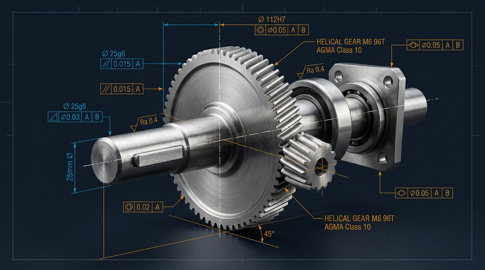
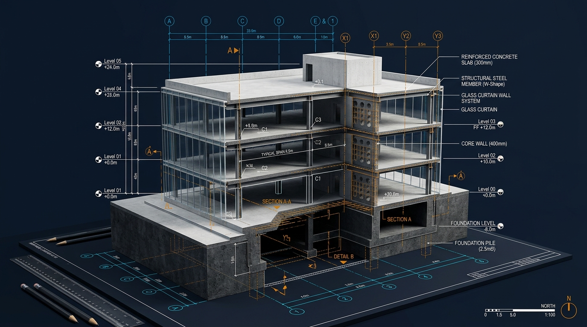
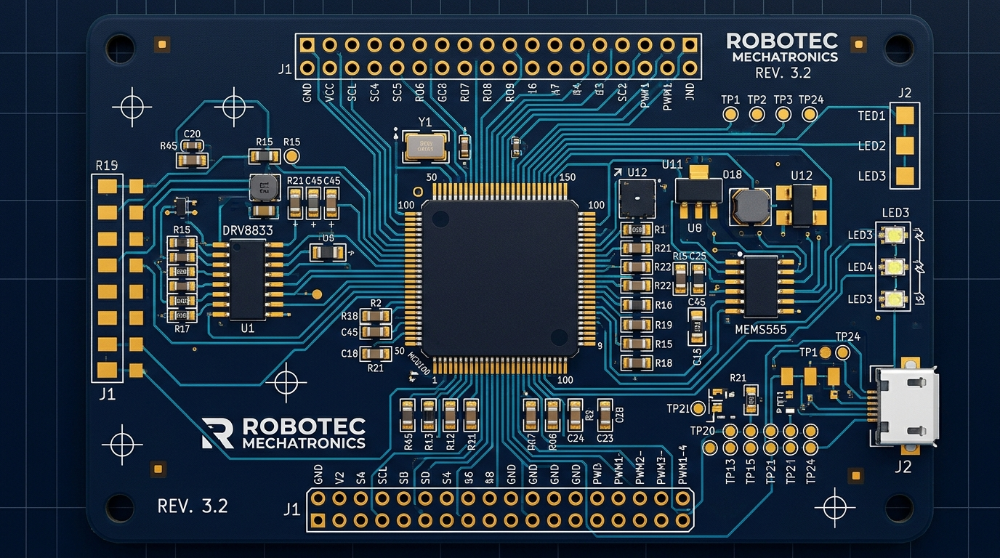
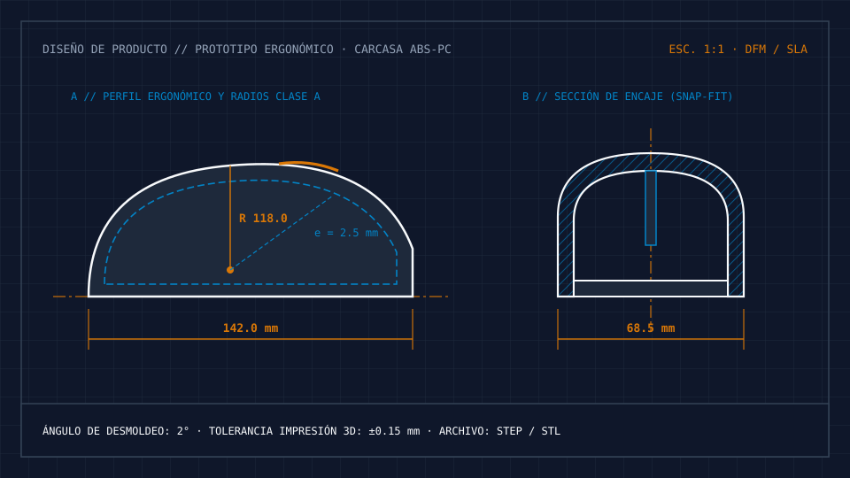

Aplicaciones del Dibujo Técnico
Descubre cómo la documentación técnica impulsa la fabricación CNC, la arquitectura contemporánea, el diseño electrónico de PCB y el prototipado industrial de productos.

Ingeniería Mecánica e Industrial
Define con precisión micrométrica ejes, engranajes, bastidores y conjuntos mecánicos para garantizar ensamblajes sin interferencias y manufactura repetible en torno, fresadora o centros CNC.
- Planos de despiece y conjunto: Listas de materiales (BOM), marcas de posición y secuencias de montaje.
- Tolerancias dimensionales y geométricas: Ajustes eje-agujero (
Ø25 H7/g6), concentricidad y planitud. - Fabricación CNC y acabados: Símbolos de rugosidad superficial (
Ra), tratamientos térmicos y soldadura.

Arquitectura y Construcción
Coordina el diseño espacial, el cálculo estructural y la ejecución en obra mediante escalas de reducción (1:50, 1:100, 1:200) y simbología estandarizada de muros, vanos y niveles.
- Plantas y alzados: Distribución funcional, ejes estructurales, cotas acumuladas y fachadas.
- Cortes estructurales: Secciones que muestran cimentación, losas, cubiertas y alturas libres.
- Redes eléctricas y sanitarias: Diagramas unifilares, acometidas, desagües y climatización (MEP).

Electrónica y Mecatrónica
Representa relaciones lógicas, flujo de señales, distribución de potencia y trazado físico de pistas de cobre en placas de circuito impreso y sistemas automatizados.
- Diagramas esquemáticos: Simbología normalizada IEC para componentes activos, pasivos y sensores.
- Diseño de PCB: Huellas (footprints), capas de cobre, vías, impedancia controlada y archivos Gerber.
- Automatización: Esquemas de cableado PLC, neumática/hidráulica (ISO 1219) y tableros de control.

Diseño de Producto Industrial
Integra ergonomía, estética formal y viabilidad productiva. Desde bocetos ortogonales de proporción hasta planos de control dimensional para impresión 3D y moldes de inyección.
- Ergonomía y antropometría: Radios de agarre, superficies clase A y curvas de contacto humano.
- Prototipado rápido e impresión 3D: Control de espesores de pared, holguras y encajes snap-fit.
- Documentación CMF: Especificación de materiales, texturas y ángulos de desmoldeo para producción masiva.
Resumen por Disciplina Industrial
| DISCIPLINA | ESCALAS TÍPICAS | NORMAS PRINCIPALES | ENTREGABLES CLAVE |
|---|---|---|---|
| Ingeniería Mecánica | 2:1 · 1:1 · 1:2 · 1:5 | ISO 128 · ISO 286 · GD&T | Planos de despiece, tolerancias CNC, listas BOM. |
| Arquitectura | 1:50 · 1:100 · 1:200 | ISO 7519 · ISO 19650 (BIM) | Plantas, alzados, cortes estructurales y redes MEP. |
| Electrónica / Mecatrónica | Sin escala / 2:1 (PCB) | IEC 60617 · IPC-2221 | Esquemáticos, ruteo PCB multicapa, archivos Gerber. |
| Diseño de Producto | 1:1 · 1:2 · 2:1 | ISO 129 · DFM / DFA | Planos de control dimensional, STEP/STL, fichas CMF. |